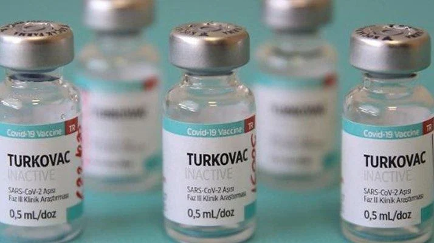
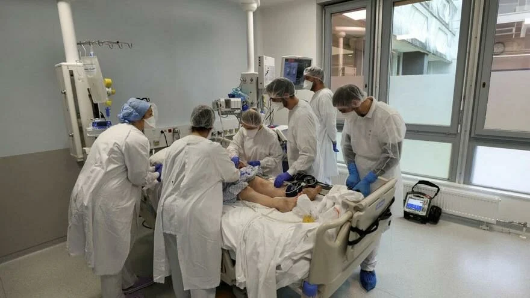

13.08.2021
Omicron varyantı en çok mutasyona uğrayan türü olarak tüm dünyaya yayılarak tehlikeyi arttırıyor. Omicron belirtileri soğuk algınlığına benzemesiyle dikkat çekiyor. Omicron belirtileri için uzmanlar kuru öksürük, boğazda gıcık ve kaşıntının öne çıkan semptomlar olduğunu söyledi. Özellikle boğazda gıcık ve kaşıntıya dikkat edilmesi gerektiği belirtildi.
Omicron varyantı dünyada hızla yayılmaya devam ediyor. Yapılan araştırmalar, Omicron’un soğuk algınlığına benzer belirtileri olduğunu ortaya çıkardı. Vakaların genelinde tat ve koku kaybı sık yaşanmıyor.

28.12.2021
Türk Tabipleri Birliği (TTB), Sağlık Bakanlığı'nın inaktive virüs aşısı Turkovac için Acil Kullanım Onayı vermesini açıklaması üzerine Halk Sağlığı Genel Müdürlüğü’ne bir yazı gönderdi.
TTB Genel Sekreteri Prof. Dr. Vedat Bulut imzasıyla gönderilen yazıda, Turkovac aşısının bilimsel bilgi ve verilerinin yeterli düzeyde paylaşılmadığı, faz-3 çalışmalarına dair herhangi bir makalenin bilimsel dergilerde yayımlanmadığı hatırlatıldı. Acil Kullanım Onayı'nın bilimsel özgürlüğü ve yönetsel özerkliği olmayan Türkiye Tıbbi Cihaz ve İlaç Kurumu tarafından verilmesinin de bilimsel çekincelere yol açacak nitelikte olduğu belirtildi.

28.12.2021
Dünya çapında 281 milyondan fazla insana bulaşan corona virüsü ile ilgili endişe verici bir araştırma yapıldı. Araştırma sonuçlarına göre corona virüsünün kalp ve beyne sıçrayabildiği tespit edildi.
Dünya çapında 5.4 milyondan fazla insanın ölümüne sebep olan ve çok ciddi sağlık komplikasyonlarına sebebiyet veren corona virüsü ile ilgili yeni bir araştırma ABD’de yapıldı… ABD’nin saygın kurumlarından Ulusal Sağlık Enstitüleri’nde görevli bilim insanları salgının ilk yılında hastalanarak yaşamını yitiren 44 hastadan elde ettikleri dokuları inceledi.
28.12.2021
Covid-19’un Omicron varyantının yol açtığı panik birçok ülkede destekleyici aşılama seferberliğine yol açarken, doktorlar kozmetik tedavilerle Covid aşısını aynı dönemde yaptırmama tavsiyesinde bulunuyor.
ABD'nin saygın gazetelerinden Wall Street Journal'ın haberine göre, doktorlar botoks ve dolgu gibi estetik amaçlı işlemlerle Covid aşısını yakın zamanlarda yaptırmanın bazı yan etkilere yol açabileceği uyarısında bulundu.
Uzmanların raporlarına göre, nadiren de olsa mRNA aşıları asit bazlı cilt altı dolgularında reaksiyona ve ciltte şişliklere yol açabiliyor.